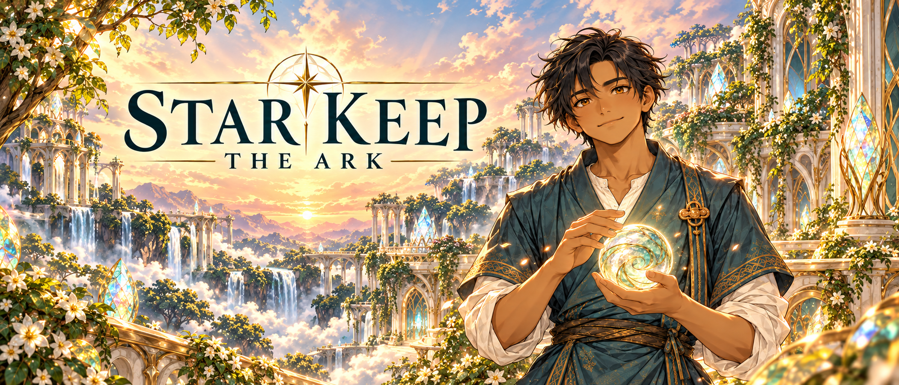
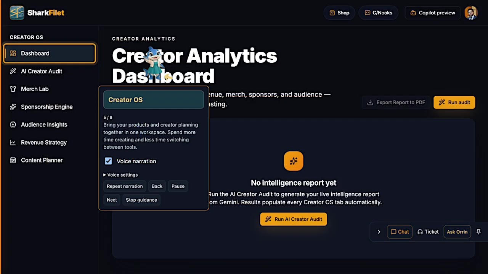
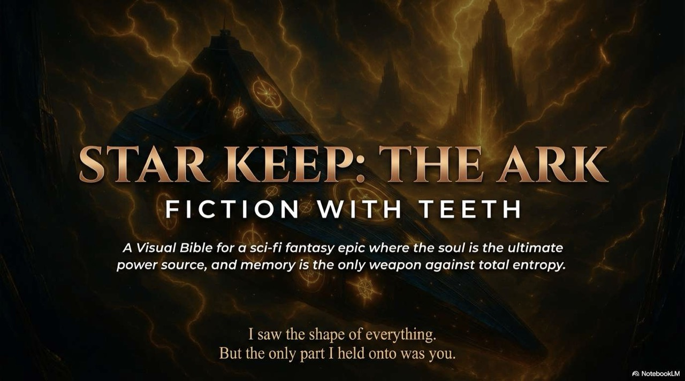

01 / Venture
Creator commerce
SharkFilet connects CreatorOS business tools, EmotiConnect adaptive protocols, and SharkCare mutual-aid split ledgers into a sovereign creator economy.
Rolando Tin Huerta Jr. is a multidisciplinary systems architect, founder, and published author working across cognitive software systems, autonomous agent workflows, creator commerce, transmedia publishing, and interactive games.
A working portfolio for a career still in motion. Select any step below to jump straight to that layer of the work.
The through-line is simple: turn ambitious ideas into durable systems—then make those systems useful to real people.
SharkFilet connects CreatorOS business tools, EmotiConnect adaptive protocols, and SharkCare mutual-aid split ledgers into a sovereign creator economy.
A 960+ page operational blueprint and local-first Second Brain architecture uniting algorithmic transaction splitting, governance, and execution.
Published sci-fi novels, Webtoon Canvas serialization, playable RPG prototypes, a 15-slide Visual Bible, and original 16-bit OST volumes.
Playable RPG builds, a live SharkFilet platform demo, the 15-slide Star Keep Visual Bible, fine-art prints, and YouTube channels.

A four-year RPG build in RPG Maker MZ & Node.js—playable directly in your browser on Itch.io or downloadable.

The live platform uniting CreatorOS infrastructure, algorithmic value splits, and creator-first commerce.

Explore original digital artwork, visual studies, and fine-art prints available online.

Watch the guided video walkthrough of SharkFilet.com, CreatorOS creator tooling, and live storefront architecture (playing pauses background OST automatically).

Complete 15-slide universe presentation covering the Ark Stream, Zo & Tali, Sentent & the Olc Dominion, Soulcraft mechanics, and expanded spin-offs.
Systems architecture notes, creative essays, philosophy, and founder builds.
Open Channel ↗SharkFilet.com walkthroughs, CreatorOS updates, and creator commerce tools.
Open Channel ↗Star Keep full-album soundtrack streams, manga trailers, and RPG showcases.
Open Channel ↗31 original BeepBox tracks across Vol. 1: Overture & Adventure (17) and Vol. 2: Cities & Idle (14). The persistent mini-player keeps streaming while you browse or switch to your résumé.
 VOL. 1 · ADVENTURE
VOL. 1 · ADVENTURE
Vol. 1 (17 tracks) and Vol. 2: Cities, Plazas & Idle Locations (14 tracks) were composed and synthesized from scratch in BeepBox by Rolando Huerta (Artwork & Concept: RTH + AG), blending 16-bit SNES/GBA chiptune leads, plucked town lutes, FM electric pianos, and cosmic lo-fi textures.
Direct downloads for the 2026 Master Résumé, the 15-slide Star Keep Visual Bible, both Retro OST tracklist sheets, and quick bio tools.
Two-page executive résumé detailing SharkFilet, Inc. architecture, Star Keep transmedia IP, $250M+ transaction closing history, research, and education.
Download tracklists and chapter sheets for both Retro OST albums or grab individual M4A tracks straight from the 31-track player above.
Download the 15-slide Star Keep: The Ark Visual Bible presentation, launch the browser RPG on Itch.io, or read on Webtoon and Apple Books.
Copy a one-paragraph speaker intro or email address, or preview the experimental Arcanum Ledger obsidian-and-gold theme mockup with my suit portrait.
A career built across systems engineering, entrepreneurship, real estate, law, public service, and creative production.
Architected CreatorOS, EmotiConnect, and SharkCare across TanStack Start, React 19, Supabase, and Stripe Custom Accounts (94 test suites, 546 tests). Authored a 960+ page operational blueprint; LISC $10K Finalist, LvLUp Ventures Accelerator, and $2M NSF SBIR R&D pipeline.
Published Star Keep: The Ark (Third Edition Expanded) on Apple Books, Google Play Books, and Amazon; authored The Meridian Protocol, Cold Weapons – War Record, and Leviathan's Slumber; directed the WebGL / RPG Maker MZ game and OST catalogs.
Directed end-to-end closing and legal review for 700+ complex transactions totaling $170M+ in secured real estate assets with zero defect tolerance using Encompass and SOFTPRO.
Audited and managed 1,000+ active tax litigation dockets, built operations protocols across 40+ client entities, and executed $110M+ in real estate closings while recovering $45K+ in delinquent tax liabilities.
Bootstrapped an ethical e-commerce cosmetics enterprise managing international supply chain procurement and customs compliance; led 300+ AmeriCorps volunteers across 780 hours and served on Mayor Jorge Elorza’s Transition Committee.
Double concentration grounded in close reading, systems thinking, ethics, and the creative construction of meaning.
Co-author. Foundational framework detailing automated on-chain transaction distribution, algorithmic mutual aid, and sovereign creator economics.
Author. Comprehensive technical architecture detailing local-first data synchronization, adaptive narrative engines, and creator business tooling.
A working thesisCreators should not have to abandon the platforms they love in order to build durable businesses, communities, and lives.
For systems architecture, strategic partnerships, creative collaboration, or thoughtful questions.
Multidisciplinary Systems Architect, Founder, and Published Author operating at the convergence of cognitive software systems, autonomous agent architecture, and sovereign creator commerce. Architected and deployed SharkFilet Inc., engineering local-first operating platforms (CreatorOS), emotional intelligence protocols (EmotiConnect), and the rich transmedia universe of Star Keep. Combines a decade of institutional transaction rigor ($250M+ in executed real estate and legal transactions) with deep philosophical and strategic governance (Brown University, University of Oxford). Recognized for architecting durable, human-aligned systems from first principles with zero outside capital.
Published foundational framework detailing automated on-chain transaction distribution, algorithmic mutual aid, and sovereign creator economics.
Comprehensive technical architecture detailing local-first data synchronization, adaptive narrative engines, and creator business tooling.
*Note: Program coursework completed; formal diploma credential pending final module administrative conferral.